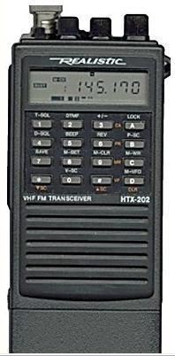

This is how to program your DTMF memory on a TH-D7 Kenwood HT. Since
this particular radio has APRS built-in, there is no real reason for
having your DTMF callsign in memory... except that it is a great way
to do demonstrations of APRStt.
Choose an OVERLAY digit or byte such as 7, if this is an HT, 9 for a mobile.
Calculate your DTMF call using the
reading how on my
two-key method or using K3PO's
Callsign Translator.
Now store your DTMF callsign into your Radio Shack HTX-202 radio:
Turn on the radio and press both the "F" key (on the side) and the "2" key for at least one second.
The LCD display will show what is in that memory as "d1 - - - - - -"
If you already have something stored in the 1st DTMF memory,
then it will say "d1" followed by whatever is stored there
(you will see the DTMF letters and numbers after the "d1".)
Enter your APRStt two-key DTMF callsign from this page starting with "A" and ending with the "#" key.
Remember that you have to press the "D" key twice if you want to enter a single "D".
Note: when you press "#" it will appear on the LCD as "F".
If your APRStt callsign is fifteen letters long, then the HTX-202 will beep as your press the final "#" key.
That's ok.
When you have finished typing all of the DTMF digits, press the PTT button on the side of the radio.
Now repeat this process to save your appreviated callsign digits.
Now, whenever you want to send APRStt data channel just follow these steps:
Press and hold down PTT.
Press the keys to send any position or text data
Follow with your callsign memory by pressing the "D" button once.
Press the "1" to send your callsign from DTMF memory #1.
Release PTT.
Note 1: If you have the "auto-reply" feature configured, then your HTX-202 will still be transmitting
after you release the PTT (in step 4) and you will have to press PTT again to stop transmitting.
If don't like having to do this, change the "auto-reply" feature by following these steps:
Press "D" once.
Press and hold "F" and while holding "F" press "M-SET" ("M-SET" is "8").
The menu appears. It will probably say "oS 0.600". Press "#" until the left word shows as "Ar".
Rotate the "TUNE" knob on top of the radio one click to change the setting.
Press PTT to save and exit.
Note 2: The HTX-202 can send DTMF digits at two different speeds (fast and slow).
You can toggle between the two speeds as folows:
Press and hold PTT, then press "D" once,
Then press the zero button.
To change back, do the same thing again
Good luck!
Enjoy APRStt
Bob,